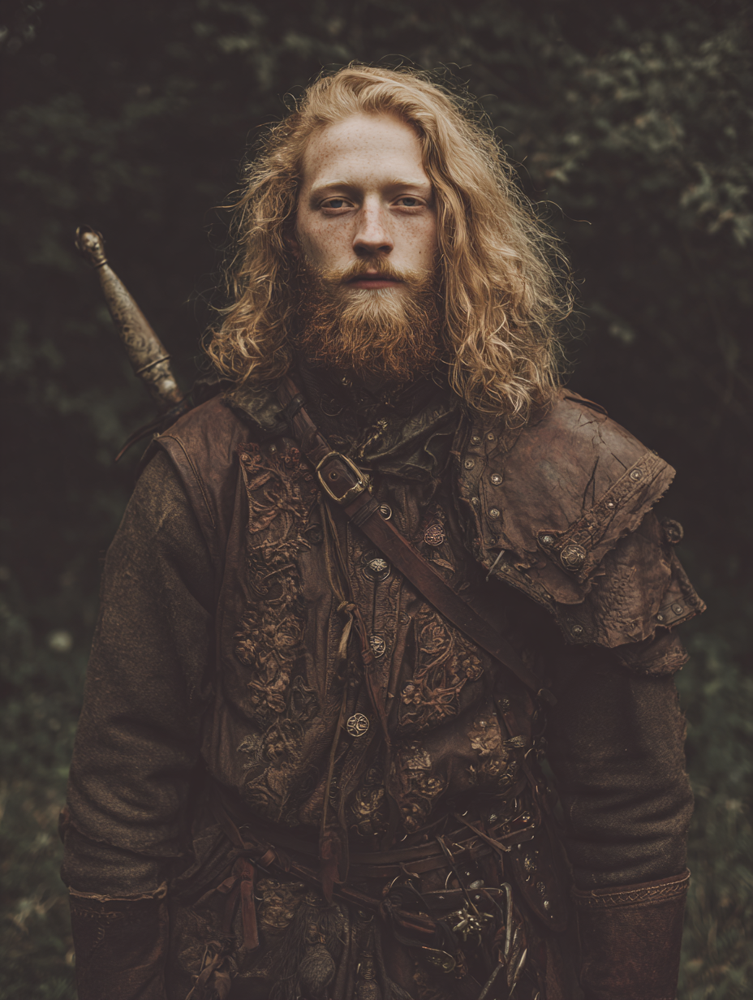
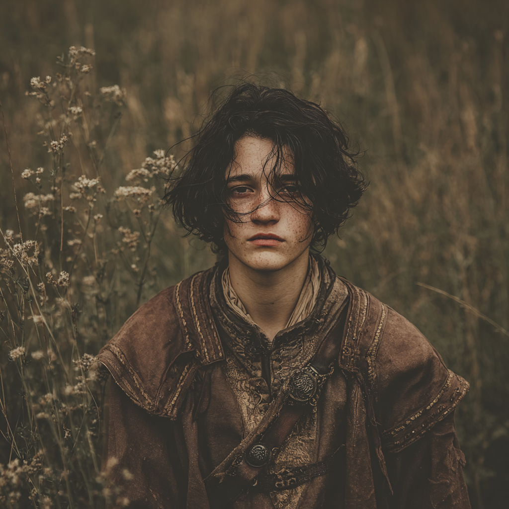
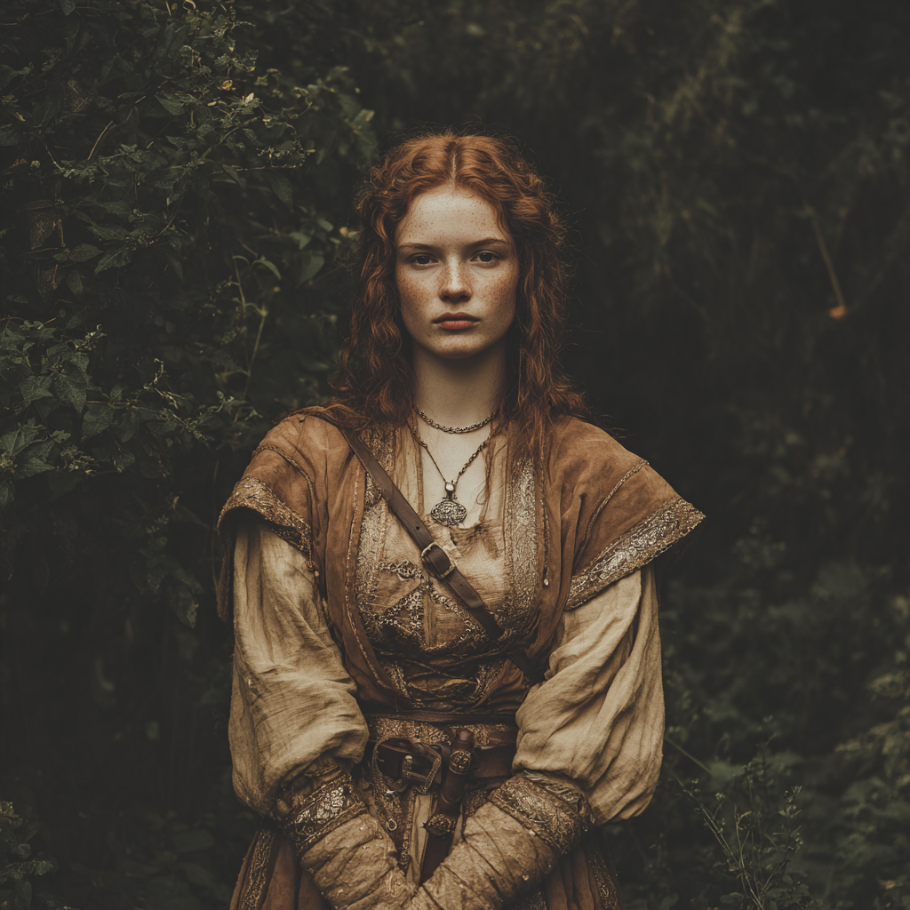
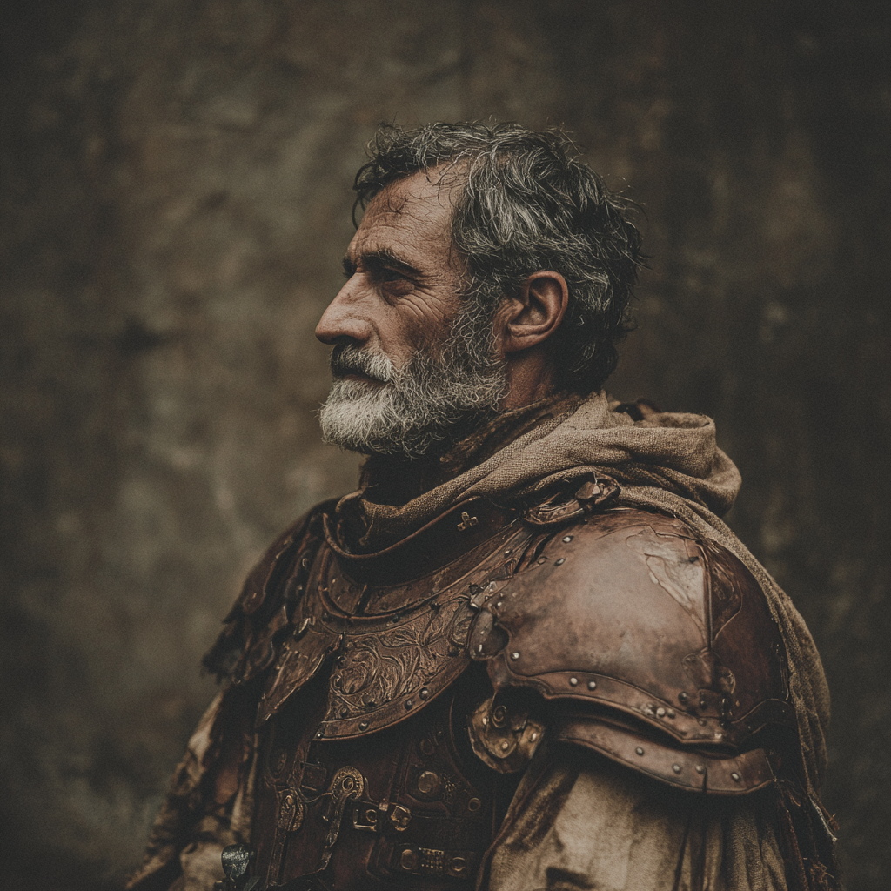
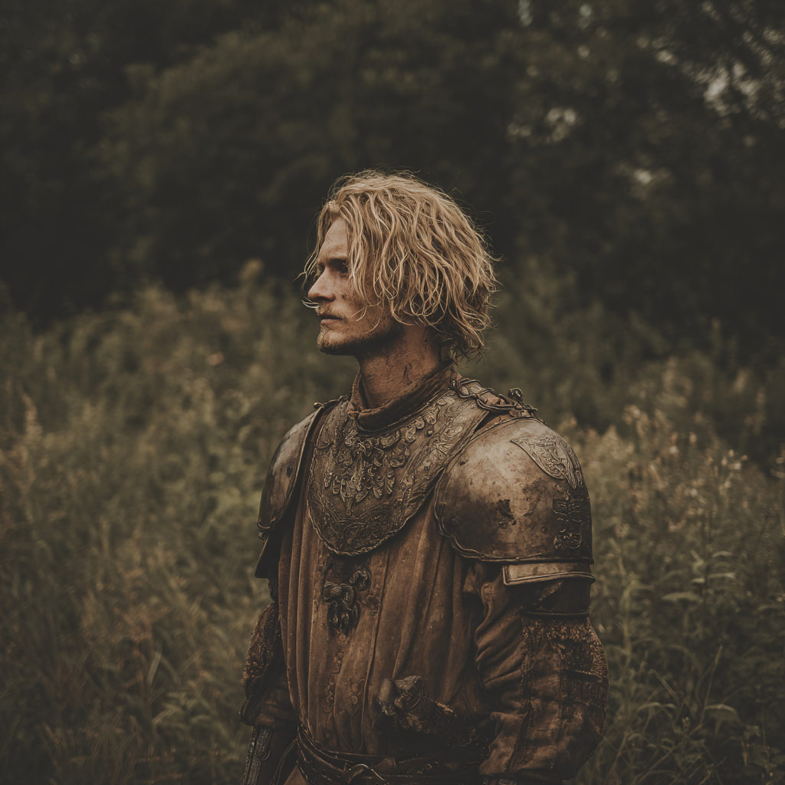
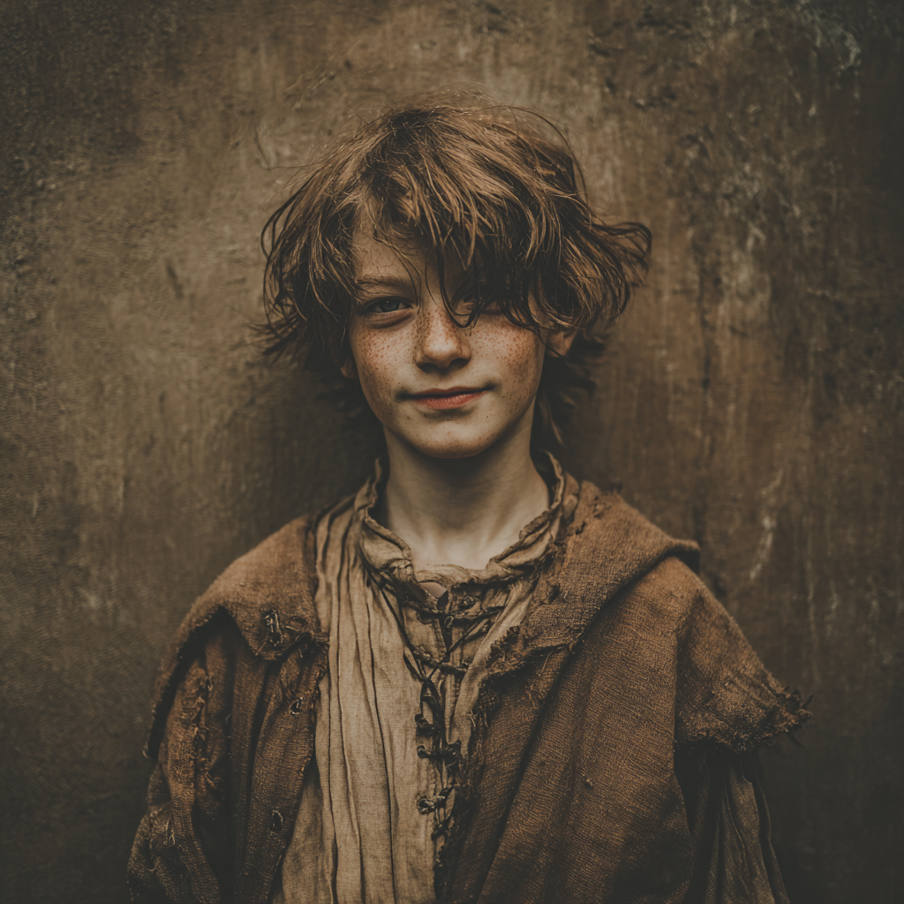
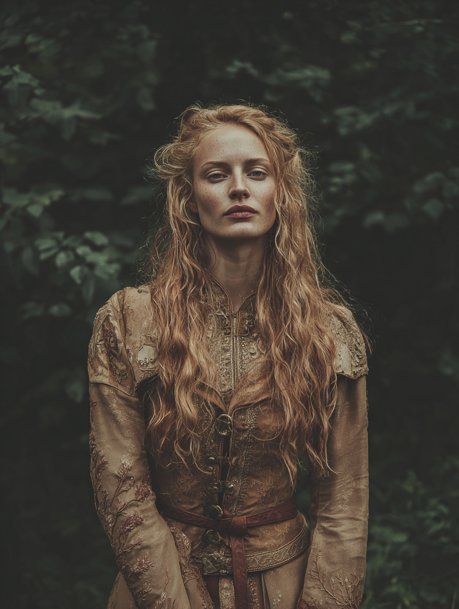

Tour-complete warden, cousin of the lord, returned from the great wode with a charge to muster — by petition if it serves, by his own voice if it does not.
The wode stirs, and the goblins have grown bold. You have walked our edge and seen what we cannot ignore. Ride now to Arnstad. Lay our want at the Duke's door — by petition, if he will hear it. By any means necessary, if he will not. Return with troops, with promise of troops, or with men who will follow you on the strength of your own word. Any aid at all will be remembered.
You bear the patronage of our house. Carry yourself accordingly. Bring my sister-cousin home unharmed.
The mission is twofold: petition Duke Erkembald for the troops of Osdon's needful defence, and — should the Duke refuse, defer, or condescend — muster what recruits Rhys can on his own authority. Either outcome registers as success at home. Both, more so. A clean refusal and a quiet return registers as failure.
Rhys ap Cadwgan is a knight of the lesser nobility of Osdon, cousin to its lord, and one of the more recent graduates of that province's warden tradition — the year-and-a-day patrol of the great wode's edge that every Cadwgan son is expected to complete before he is taken seriously at table. He completed his. He returned with the customary scars and the uncustomary report that the goblin signs along the edge are no longer scattered, but coordinated. His lord — and cousin — Osbert took the report seriously enough to put him on the road to Arnstad before the moon turned.
His class is Tactician, subclass Vanguard: he leads from the front by personality and example rather than from behind by signal and chart. His Career is Warden; his Complication is a Vow of Duty sworn to the Knightly Order in which he was raised. He carries a trace of Polder in his blood — a great-grandmother of the marsh-folk, the family does not advertise it, the family does not pretend it isn't there — and the family still keeps a few words of the Polder tongue.
Culture: Knightly Order — Secluded, Bureaucratic, Martial. Rhys was raised in close quarters, under formal rules, by warriors. The Cadwgan keep at the edge of Osdon is more chapter-house than castle: a small, drilled household, codified by writ, governed by ledger as much as by sword. He is comfortable with paperwork, with rank, and with the long quiet that obtains in cloistered places. He is less comfortable in crowds.
Twin peaks at Might and Reason — the Vanguard balance. He fights at the front (Might +2) and directs the field from it (Reason +2). Intuition and Presence form the workable middle a leader needs. Agility is the dip: he is not the dodger, he is the anchor.
| Field | Value |
|---|---|
| Speed | 6 — 5 base + 1 from Sniper kit |
| Stability | 2 — 0 base + 1 Sword & Board + 1 Vow of Duty |
| Disengage | 1 — from kits |
| Melee Damage Bonus (Sword & Board) | +2 / +2 / +2 |
| Ranged Damage Bonus (Sniper) | +0 / +0 / +4 |
| Ranged Distance Bonus (Sniper) | +10 |
| Wealth | 1 |
| Renown | 0 — a name to make, not yet made |
Rhys's Heroic Resource is Focus, the Tactician's measure of attention paid and attention seized. It accrues steadily and accelerates when his squad is engaged — his own attacks, his allies' damage, and most importantly his allies' heroic moments all feed it back to him.
| Trigger | Gain |
|---|---|
| Start of your turn | +2 |
| The first time each round that you or an ally deals damage to a creature marked by you | +1 |
| The first time in a round that an ally within 10 squares uses a heroic ability | +1 |
The Focus loop is a leadership economy. A Vanguard Tactician who fights at the front, marks well, and trusts the people around him to do their work is a Vanguard Tactician with full coffers.
Rhys is Human — and Humans, in the lore of this world, belong to the world more thoroughly than the other speaking peoples do. They are the ones who smell the supernatural in the air.
| Trait | Function |
|---|---|
| Detect the Supernatural (Maneuver) | Open his awareness to detect supernatural creatures and phenomena nearby. He cannot place a name to what he senses, only that it is present. |
| Resist the Unnatural (Triggered Action) | When he takes damage that isn't untyped, his instinctive resilience kicks in — a hard-won veteran's reflex against the things the wode produces. |
| Determination (Maneuver) | A trained tolerance for pain and distress lets him push through difficult situations that would unseat others. |
His Polder trace is a colour, not a mechanic — a few words at table, a way his grandmother used to set wards on the door-frame at the dark of the year. He does not advertise it. He does not deny it.
The Tactician's signature instrument is the Mark. Rhys designates a target, and his squad's attention follows. Edges accumulate against that target — for him and for every ally in his line of effect. When marked enemies fall, he can move the mark on the same breath. When marked enemies attack, the mark becomes a hook he can use.
The target is marked by Rhys until the end of the encounter, until he is dying, or until he uses this ability again. He can willingly end the mark (no action required). If another tactician marks the creature, Rhys's mark ends.
When a creature marked by Rhys is reduced to 0 Stamina, he can use a free triggered action to mark a new target within distance.
At Level 1 he may have only one creature marked at a time. While a marked creature is within his line of effect, Rhys and his allies within his line of effect gain an edge on power rolls made against that creature.
Choose one benefit (no more than one per trigger):
If the target is reduced to 0 Stamina before one or both chosen allies has made their strike, the ally or allies may pick a different target.
The Vanguard subclass is for tacticians who lead from the line. Where the Mastermind directs and the Insurgent subverts, the Vanguard does the thing himself and expects the squad to keep up. The doctrine teaches the stratagems of ancient heroes — victory through force of will and personality.
Rhys commands any room he walks into. While he is present during a negotiation, each hero with him treats their Renown as 2 higher than usual. Additionally, each hero with him during a combat encounter has a double edge on tests made to stop combat and begin a negotiation.
This is the doctrine's keystone. It says, in mechanical terms, what the family says in moral terms: a Cadwgan walks into a room and the room reorganises itself.
Parry is a free-cost defensive signature with a reach of two squares — the Vanguard's promise to his squad that he is always one step from being between them and the blow.
The Tactician class grants a Field Arsenal feature: Rhys carries two kits at once, and uses both their signatures. He drilled with both as a warden, and uses one or the other depending on whether the work calls for a wall or for a shot from cover.
If he does not take a move action this turn, this strike deals extra damage equal to his Might or Agility score (his choice).
Brawny (Exploration) — Rhys's physical conditioning carries him through endurance work that lesser men would refuse. The warden's year-and-a-day teaches a body to keep moving.
Kaelian — the common tongue of the kingdom, in which all official correspondence runs. Vaslorian — a regional tongue, picked up on the wode-edge from neighbouring foresters and the occasional retired ranger. Polder — a handful of household words and weather-charms, not formally spoken but heard from his grandmother and his great-aunt; not counted as a learned tongue.
Rhys has sworn an oath to the Knightly Order in which he was raised — the formal organization of which the Cadwgan keep is one chapter, and which is the moral and legal scaffold of his life. The organization is his rock. So long as his faith in it remains unshaken, he is immovable: his Stability is increased.
The mission to Arnstad is in the spirit of the vow — he was sent by his lord, who is also the chapter's authority. But the latitude granted ("by any means necessary") puts a measure of judgment back in his hands. The first time his judgment and the Order's standing instruction part ways will be the moment to watch.
Rhys is a graduated Warden: he protected a wild region — specifically, the eastern marches of Osdon along the edge of the great wode — from poachers, cultists, and the worst of what the wode produces. The career granted him knowledge of Nature, the ability to Navigate unfamiliar ground, an ear for Eavesdrop, the second tongue of Vaslorian, and the Brawny Exploration perk.
Rhys completed a tour on the edges of the great wode. He saw what he saw — coordinated goblin sign, an alarming number of fresh tracks, the wrong kinds of fires at night. He returned with the report. His lord has now called him to muster recruits by any means necessary. The plates and chevrons of the Knightly Order are not enough; Osdon needs bodies, and Rhys has been told to find them.
Six travel with him. Each is described below in their own hand, save Carys, whose case is set out separately overleaf.






Carys came along for three reasons. To assist her brother on a charge above his weight. To meet, if the capital provided them, men of suitable rank and acceptable manners. And — though she would not say this to Rhys, and certainly not to Aoife — to discover what is happening to her.
She has been having episodes. Things go cold in her hand when she does not mean them to. A candle once would not light for her, and only her, for a full evening. She has heard a sound that was not in the room. She has not told anyone what she suspects, because she does not know whether to suspect an elementalist's awakening, a null's emptiness, or something else entirely — and the difference, in this kingdom, is the difference between an apprenticeship and a manacle.
Three cards, drawn on a question put plainly:
The party rode into Arnstad — Duke Erkembald's seat — without incident. Their first objective was not yet the audience itself but the reconnaissance that ought to precede one: who actually decides things here, what the Duke wants in exchange for hearing a petition, and where the weak places in his administration are. Declan loosened tongues at one set of taverns, Aoife and Carys worked another set of rooms, John watched, Palfrey was kept on a short rein, and Padraig — being Padraig — was already worrying about the weather for the return journey.
By the end of the day Rhys had a working picture of the Duke's court. It runs as follows.
Working approach for the petition: Praise Erkembald's competence. Frame the goblin incursion as an opportunity for him to demonstrate decisive leadership before the King's court hears of it from elsewhere. Avoid appeals to the common good — they make him think he is being asked to do something for which he will receive no credit. If the petition fails, fall back to the recruiting authority Lord Osbert granted, and look for Dame Kelly privately.
Names that have surfaced so far — some are kin, some are levers, some are merely worth remembering.
| Place | Note |
|---|---|
| Osdon | The province. Lord Osbert's domain. Cadwgan country. The wode-edge runs along it; the goblin incursions are along that edge. |
| Arnstad | The Duke's town — Duke Erkembald's seat. The party is here as of Session I. Where the petition will be made and the recruiting attempted. |
| Bainford | Has a Trout & Barrel (inn) and a Merchant's Association. Mentioned in the file; the party's relation to it is in development. |
| River Toren | One of the named waters of the region. |
| The Lucent | The second named water of the region. |
| Duke Tearloch's lands | East and south of Erkembald's. A second axis to consider, should Arnstad fail. |